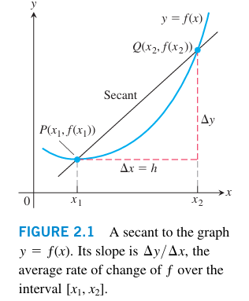
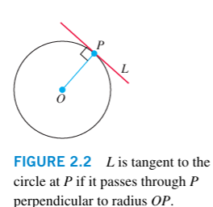
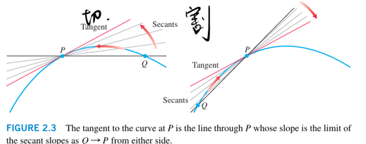
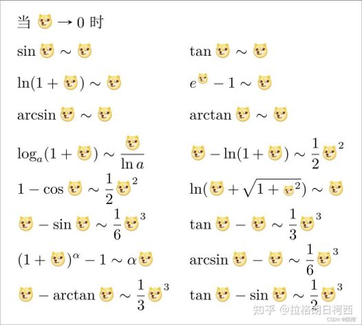
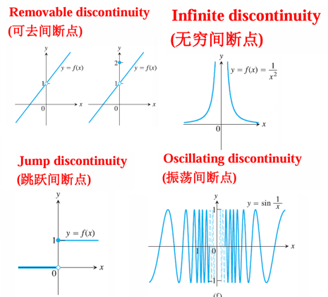
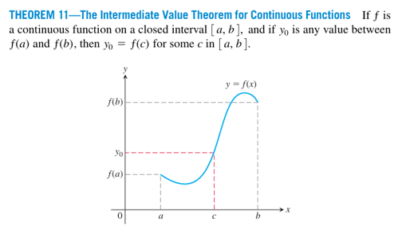

Limit and Continuity 极限和连续性
变化率 切线割线
平均变化率，割线
函数在区间 上的平均变化率定义为：

经过点 和 的直线称为割线，割线的斜率就是函数在区间 上的平均变化率。
切线
切线是指在某一点 处与函数图像相切的直线。

上图中，OP为法线(normal line)，PL为切线(tangent line)。

当点趋近于点时，割线变为切线，切线为割线的极限位置。
极限
极限的概念
函数 在点 处的极限是指当自变量 趋近于 时，函数 所趋近的唯一确定的值，记作：
函数在点左右附近有定义，与无限接近时，无限接近某一确定的常数，则称为函数在点处的极限。
注意：时，在处可以没有定义，也可能不等于。
极限计算法则
设，，则有：
- 为常数
- 为正整数
- 当为偶数
注意：
Example
求。
Solution:
三明治定理
设函数在点的某一去心邻域内有定义，且满足不等式，如果
则：
如果对于在的邻域或者去心邻域内有，且都存在，则有：
注意
- 如果条件换成,结论换成，可能不成立。
- tips:当时，取在时的极限
- 与的极限必须存在
极限带绝对值
不可以往右推导，tips:f(x)不有跳跃间断点。
Example
求。
Solution:
注意到：
所以：在之间。
但是三明治定理要求夹住函数，不妨直接对取max或min(这里取了绝对值),有：
当时
由三明治定理可得：
极限的精确定义
设函数在点的某一去心邻域内有定义，若存在常数，使得对于任意给定的正数，都存在对应的正数，当时，都有，则称函数在点处的极限为，记作：
注意
- 与有关系，不唯一。
- 一般只考虑
Example
用极限的定义证明不存在。
Solution:
假设存在，则对于，则，其中为整数。
此时，，所以
无解，所以不存在。
一侧极限
左极限与右极限
函数在点处的左极限是指当自变量从的左侧趋近于时，函数所趋近的唯一确定的值，记作：
函数在点处的右极限是指当自变量从的右侧趋近于时，函数所趋近的唯一确定的值，记作：
严格定义
函数在点处的左极限为，记作，是指对于任意给定的正数，都存在对应的正数，当时，都有。
函数在点处的右极限为，记作，是指对于任意给定的正数，都存在对应的正数，当时，都有。
左右极限和极限的关系
重要极限
等价无穷小

建议将所有的等价无穷小记为乘法的形式，作为常数的替换乘到原来的极限中
本质上是泰勒展开
下面是一些参考
我们可以看到一些等价无穷小的样子。
比如,
Example
计算
错误示范
正确做法
连续
函数 在点 处连续的定义是：
- 有定义；
- 存在；
- 。
如果一个函数在某个区间内的每一点都连续，则称该函数在该区间内连续。
左连续和右连续
（测试时换成单边极限）
间断点

连续函数介值定理

当在上连续时，使得。
零点存在定理
当在上连续且时，存在使得。
复合函数的极限
如果在连续，且，则。
外有极限 内有极限 可能啥也不是（连续性没有保证）
反例tips：有可去间断点，左右横跳接近可去间断点。
无穷极限 渐近线
函数在无穷远处的极限
时的极限
若对于任意给定的正数 ，都存在相应的数 ，使得当所有 满足 时，有 ，则称当 趋近于正无穷时， 的极限为 ，记作：
时的极限
若对于任意给定的正数 ，都存在相应的数 ，使得当所有 满足 时，有 ，则称当 趋近于负无穷时， 的极限为 ，记作：
注：这里的 和 不唯一。
函数趋近于无穷（ 时）
若对于任意正实数 ，都存在相应的 ，使得当所有 满足 时，有 ，则称当 趋近于 时， 趋近于正无穷，记作：
若对于任意负实数 ，都存在相应的 ，使得当所有 满足 时，有 ，则称当 趋近于 时， 趋近于负无穷，记作：
渐近线
水平渐近线
若直线 满足 或者 ，则 是函数 图像的水平渐近线。
垂直渐近线
若直线 满足 或者 ，则 是函数 图像的垂直渐近线。
斜渐近线
若 或者 （其中 ），则称 是 的斜渐近线（也称为斜截渐近线）。
极限法求斜渐近线系数：
若 ，则：
- 斜率 ：
- 截距 ：
（若考虑 ，将上述极限中的 替换为 即可）
另一种表述：若 （其中 ）且 ，则 是 的斜渐近线（ 时同理）。